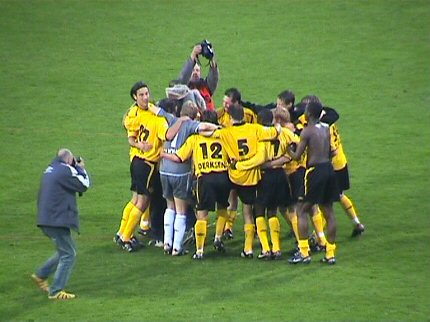

|
Roda JC - FC Utrecht (2-1) 16 oktober 2005
|
De fiere vuurtorens van het Parkstad Limburg Stadion beginnen werkeloos
aan deze zonnige zondag in het zuiden.
FC Utrecht heeft een van de betere uitsupporters. Veel gezang en een goede
opkomst.
Roda knokte ervoor maar bereikte nauwelijks de voorste linies. Ondanks de
zon die in de eerste helft zeer hinderlijk scheen voor de tegenpartij was het
Utrecht dat voortdurend dreigend op de helft van Roda opereerde hetgeen in
de cornerverhouding tot uiting kwam. Hier wordt een van de vele hoekschoppen
van Utrecht ternauwernood onschadelijk gemaakt.
Doelman Terol laat een afstandsschot van Kah uit handen glippen waarna
Oper er meteen bij is. Hij glijdt echter uit waardoor deze enorme kans geen
doelpunt oplevert.
Kujovic glijdt weg bij een schot van Braafheid die de bal met een curve het
Roda-doel laat inrollen. Feest in het uitvak: 0-1, (35').
Arouna Kone op bezoek bij Roda. Hier tijdens de rust op noord.
Hoekschop Roda; Terol stompt de bal weg.....
...de bal komt voor de voeten van Sergio.....
...deze stuitert de bal in het doel: 1-1, (53').
Ook leuk voor de mensen die juist op dat moment over het stadion varen
met de Roda-luchtballon.
Vijf minuten later schuift de zeer hard werkende Oper de bal achter Terol.
2-1, (58').
Twee generaties Z16-koempels.
Vincent Lachambre (rechts), afgelopen seizoenen een trieste bankzitter, is
inmiddels uitgegroeid tot een vaste waarde.
Roda versnelde en speelde Utrecht regelmatig volledig zoek. Toch waren er
in de slotfase nog enkele spannende momenten waardoor de drie minuten
extra speeltijd bijna teveel werden.
Grote opluchting na het eindsignaal!
De derde overwinning is binnen.

Ook bij de spelers is de ontlading groot.
In de Kickoff was het nog een uurtje gezellig met veel vrolijke supporters.
In de Herjod gaat het feest langer door. Begois maakt een praatje met Kujo.
De nieuwe algemeen directeur Huub Narinx blijkt zeer vereerd met het
visitekaartje
van www.koempel.nl
Danniëlle steekt alvast een kaarsje op voor de volgende wedstrijd tegen
Sparta.
Ter afsluiting van deze mooie voetbaldag wordt er copieus gedineerd en
geposeerd bij Saki te Heerlerheide.
© Koempels Pleasure Dome
|